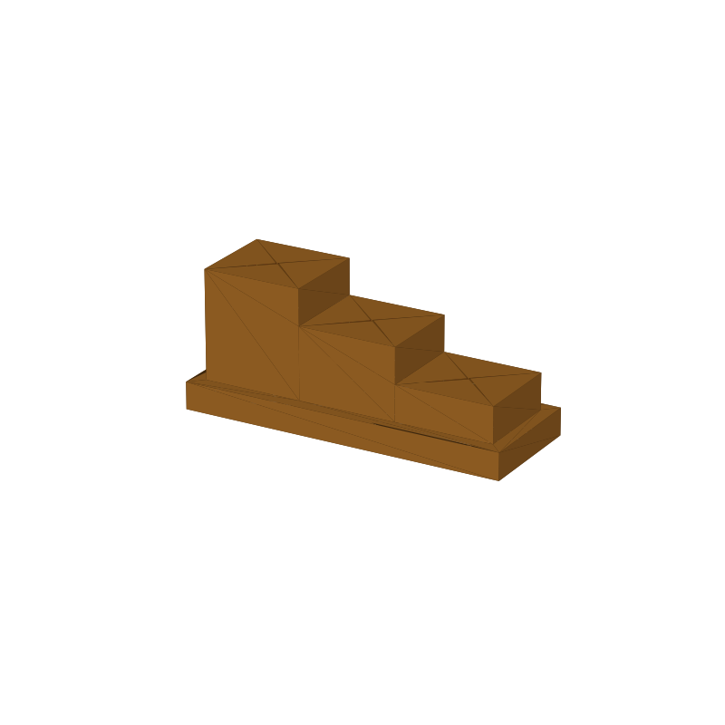

Insect pinning block STL, three steps on a low base
This is the compact pinning block in our pool. A related design with taller columns and a larger guide hole has its own insect pinning block spec sheet; this page covers the low, parametric variant and carries only its own numbers.
Setting a drawer of pinned insects at one level is a repeat job: pin down, specimen on, next specimen, same height again. The block gives you three fixed references in one piece. Push the pin in point-down until the tip rests on the bench, slide the specimen down the shaft onto the step top, and the step height fixes the gap between specimen and pin head.
The step tops sit at 30, 22 and 14 mm. Standard 38 mm #3 pins leave 8, 16 and 24 mm of shaft above the tall, mid and short steps, so one block stages shallow and deep-bodied specimens at a uniform height. Each step carries a guide hole that runs clear through the block, so the pin tip lands on the bench and nothing rides on the hole bottom.
The whole block is one solid piece: three 22 × 20 mm towers on a 6 mm base with rounded corners. It prints flat on the base in under an hour, about 10 to 15 g of PLA at typical infill. Every dimension is a parameter in the generator (gen_pinning24.py): step heights, footprint, pin diameter, clearance and base thickness.
This page carries the measured spec sheet: dimensions taken from the mesh, the step and hole layout, and preview renders, so you can check the sizes before you slice.

Spec sheet, measured from the mesh
| Spec | Value |
|---|---|
| Block | 72.0 × 26.0 × 30.0 mm, one piece, exported flat on the bed |
| Step tops | 30 / 22 / 14 mm above the bed, verified from the mesh: top face bands at z = 30, 22, 14 |
| Steps | Three towers along the 72 mm length, 22 × 20 mm footprint each, on a 6 mm base with a 3 mm rim and 3 mm rounded corners |
| Pin guide holes | Ø0.65 mm, one per step, cut through to the base bottom (floor = bench); sized for a Ø0.5 mm #3 pin shaft plus 0.15 mm diametral clearance |
| Shaft above block | 8 / 16 / 24 mm on the tall, mid and short steps with standard 38 mm #3 pins |
| Volume | 32.3 cm³ solid, roughly 10-15 g of PLA at typical infill |
| Print time | Under an hour, PLA, 0.4 nozzle, 0.2 mm layers |
| Construction | One piece, no fasteners; the guide holes are vertical, so every layer prints as a plain ring, no supports, no bridges |
| Mesh check | Watertight, winding consistent, 1 body, 1,824 faces (trimesh 5.1.0, 2026-09-10) |
| Files | STL (91 KB) and 3MF (18 KB) plus the parametric generator script |
| License | CC-BY 4.0 on the MakerWorld upload; royalty free, no AI training, direct from us |
How the three steps work
The method is the same on every step: pin goes in point-down, tip rests on the bench, specimen slides down the shaft onto the step top. The step top sets the distance between specimen and pin head, so a whole drawer ends up level without measuring each pin.
What changes between steps is how much shaft is left above the block. The tall step leaves 8 mm for a specimen that sits close to the block, the mid step 16 mm, the short step 24 mm for deep-bodied specimens or extra label stack. Adjacent steps differ by 8 mm, which keeps the jumps predictable when you move between them.
Because the hole runs through to the base bottom, the pin tip rests on the bench and the block never interferes with the depth. A pin pushed too far just keeps going until its head stops against the step top, which is the same failure mode as pressing a pin into cork, and it cannot jam against a blind bottom.
Print notes
The block slices as exported: flat on the base, all three guide holes vertical. Vertical holes mean every layer is a plain ring, so there are no overhangs, no bridges, no supports anywhere on the part.
I have not test-printed this one yet. If you print it, post a make and say how the holes run. If pins grab, ream the hole with a spare pin, or bump the clearance parameter (CLR, 0.15 mm as exported) in gen_pinning24.py and rebuild.
The generator takes step heights, footprint, pin diameter, clearance and base thickness as parameters. To fit #1 or #2 pins instead of #3, change the pin shaft diameter and the pin length, rerun the script, and the holes and shaft-above numbers follow.
How this differs from the taller three-stage block
Our three-stage pinning block solves the same job with three full-height columns: stage tops at 24, 16 and 8 mm, a Ø1.5 mm guide hole that takes the whole size 0-5 range, spare-pin pockets and the heights printed in as numerals. It is the bigger tool at 52.5 cm³.
This block is the lighter one: 32.3 cm³, under an hour of printing, towers on a 6 mm base. The guide hole is sized to one pin, the standard #3, with the clearance as an explicit parameter. Pick this one when you work with #3 pins and want a small part; pick the taller block when you mix pin sizes or want spare-pin storage on the tool.
Where to get the files
The pinning block is staged on our MakerWorld account and goes public on our profile once it is submitted and clears review.
More printed organizers and tools, with a status table for the pool: 3D printed desk organizers and printable tools.
FAQ
Which pins does the Ø0.65 mm hole take?
It is cut for the standard #3 entomology pin, 0.5 mm shaft, with 0.15 mm of diametral clearance. Other pin sizes go through the generator: set PIN_SHAFT_D to your pin's shaft and rerun, and the hole diameter follows (HOLE_D = shaft + clearance).
Why does the pin tip rest on the bench?
Depth consistency. The step top fixes the pin head height, the bench fixes the tip, and the block in between carries the hole without setting any depth of its own. Nothing rides on the hole bottom, so a worn or dirty hole bottom cannot throw one specimen out of level.
Why three steps on one block instead of one flat step?
Specimens in one drawer range from shallow to deep-bodied, and each needs a different amount of shaft above the block to sit at the same level. Three steps with 8 mm between them cover that range on a single tool you keep on the bench, and the whole thing is one print under an hour.